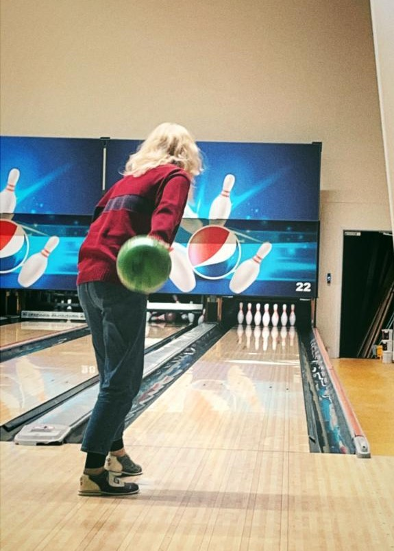
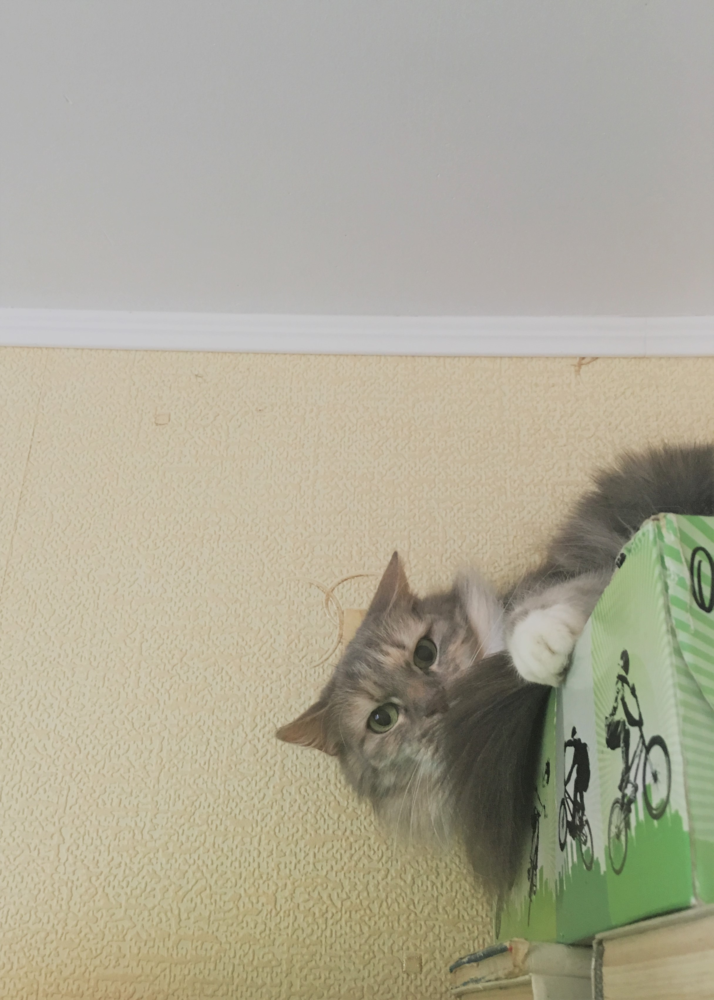

"Tas ir ļoti svarīgi - laiku pa laikam. Kļūt mazam, lai augtu liels."
- Imants Ziedonis
“Ir tikai viens veids, kā izvairīties no kritikas:
neko nedari, neko nesaki un nekas neesi.”
- Aristotelis
“Cilvēks, kurš ne reizi nav pieļāvis kļūdu, nekad nav mēģinājis neko jaunu.”
- Alberts Einšteins
Es esmu Amanda Vītola. Man ir 21 gads un esmu no Liepājas.
Lielāko dzīves daļu esmu nodzīvojusi šajā pilsētā. Esmu dzimusi šeit, taču daudz zinu arī par Ventspili, jo
daudzus gadus esmu pavadījusi arī tur.
Es sevi raksturotu kā radošu un mērķtiecīgu cilvēku, kurai patīk sevi pilnveidot visnedažādākajās nozarēs - māksla, programmēšana,
veselība, tehnoloģijas, rokdarbi u. c.. Priecājos par katru iespēju sev iemācīt ko jaunu.
Dzīvē visvairāk es mīlu darīt tās lietas, kas mani attīsta un iedvesmo. Viena no šīm lietām ir mūzika. Es mīlu klausīties mūziku
un mīlu to spēlēt. Aizraujos arī ar daudzām citām lietām, par dažām no tām pastāstu "Mani hobiji" sadaļā.
Esmu izveidojusi šo mājaslapu, lai ikviens varētu uzzināt par mani mazliet vairāk, un priecāšos par katru lasītāju!
Es draudzenes dzimšanas dienas ballītē
Viena no manām mīļajām kaķenītēm - Rika
Pastaigājos gar jūru
"Ja tu spēj saskatīt skaistumu, tad tikai tāpēc, ka skaistums ir tevī pašā. Jo pasaule ir kā spogulis, kurā katrs redz sevi pašu." - Paulu Koelju
Ģitārspēle
08.03.2022.
Manuprāt, skaņa ir aizraujoša. Tāpēc spēlēju ģitāru jau gadu. Un pētu un jau krāju dažādus skaņas efektu pedāļus.
Tamborēšana
24.12.2021.
Tamborēšanu sāku apgūt jau no 1. klases patstāvīgi. Iepatikās, jo sanāca, un šī nodarbe ir kā radoša terapija. Varu veidot kaut ko skaistu un noderīgu.
Gatavošana
02.12.2021.
Man patīk un padodas gatavot dažādus ēdienus. Labprāt atrodu interesantas recepšu idejas internetā un eksperimentēju. Gatavoju dažāda veida saldumus kā bulciņas, cepumus, saldās maizes, un ar tām iepriecinu draugus un radiniekus.
Mīļākā grupa
Visbiežāk manis klausītā dziesma pēdējā laikā
Ja vēlies nosūtīt man kādu ziņu - uzraksti, nosūti, un es to saņemšu!